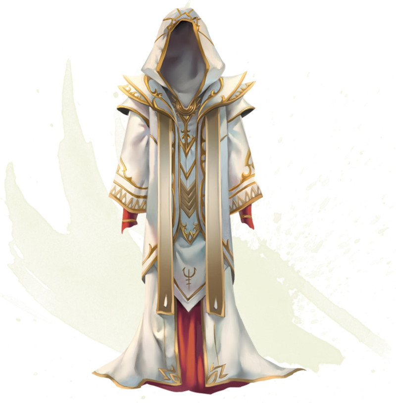

Robe de l'archimage
Objet merveilleux, légendaire (nécessite un lien avec un ensorceleur, un magicien ou un occultiste)
Ce vêtement élégant est brodé dans une étoffe raffinée de couleur blanche, grise, ou noire et ornée de runes d'argent. La couleur de la robe correspond à l'alignement pour lequel cet objet a été conçu. Une robe blanche est faite pour un personnage bon, une robe grise pour un neutre, et une robe noire pour un mauvais. Vous ne pouvez pas vous lier à une robe de l'archimage si votre alignement ne lui correspond pas. Vous gagnez les bénéfices suivants tant que vous êtes équipé de cette robe :
• Si vous n'êtes pas équipé d'armure, votre Classe d'Armure de base est 15 + votre modificateur de Dextérité.
• Vous avez un avantage aux jets de sauvegarde effectués contre les sorts et tout autre effet magique.
• Le DD aux jets de sauvegarde de vos sorts et votre bonus d'attaque avec un sort sont chacun augmentés de 2.
• Si vous n'êtes pas équipé d'armure, votre Classe d'Armure de base est 15 + votre modificateur de Dextérité.
• Vous avez un avantage aux jets de sauvegarde effectués contre les sorts et tout autre effet magique.
• Le DD aux jets de sauvegarde de vos sorts et votre bonus d'attaque avec un sort sont chacun augmentés de 2.
Dungeon Master´s Guide (SRD)
